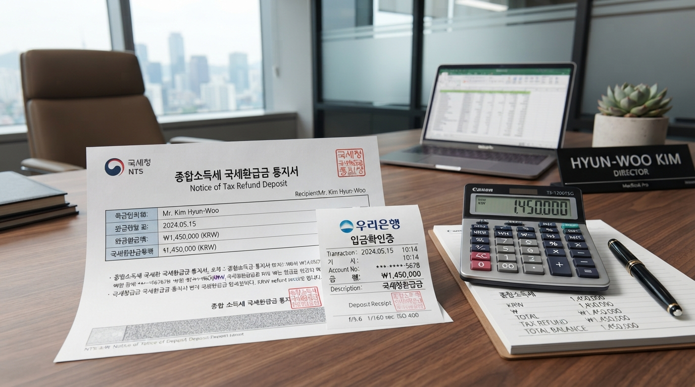

놓친 세금,
다시 한 번
검토 받아보세요.
조세특례제한법에 의한
이미 신고된 사업자가 납부한 세금에 과다 납부가 있었는지 확인하고
요건과 절차를 검토해드립니다.
경정청구란 무엇인가요?
신고한 세금이 실제 부담해야 할 금액보다 많았다고 판단될 때, 세법에 근거하여 국세청에 정당한 세액 감액과 환급을 요청하는 납세자의 합법적 권리 구제 절차입니다.
국세기본법 제45조의2 제1항에 따라 지난 5년간 과다 납부한 세액을 합법적으로 청구
과세표준 및 세제 감면 누락분을 객관적으로 재검토하여 납세 권익을 확실히 보호
조세환급 프로세스
사전 무상 진단부터 세무서 정식 소명 대리, 환급금 수령 및 사후관리까지 7대 핵심 모듈로 빈틈없이 지원합니다.
URL 간편 인증
본인 동의 절차를 통해 홈택스 및 과거 신고 데이터를 안전하게 수집합니다.
환급 여부·금액 검토
5개년 납부 내역과 법정 감면 요건을 대조하여 정밀한 예상 환급액을 도출합니다.

계약서 간편 작성
무료 사전 검토 후 예상 환급액 확인 시에만 고객의 자율적 의사로 위임 계약을 진행합니다.
신고서 작성 및 소명
경정청구 이유서 편성 및 과세관청 제출을 위한 객관적 소명 입증 서류를 정리합니다.
세무서 정식 접수
관할 세무서에 정식 접수를 진행하고 담당 조사관의 자료 보정 및 소명 요청에 즉각 대응합니다.
조세환급 완료 및 정산
관할 세무서의 인용 결정 통지서와 의뢰인 계좌로의 국세환급금 입금을 확인한 후 정산합니다.

5개년 사후관리 보장
환급 이후에도 당시 받았던 경정청구 내용에 대해 고용 유지 등 사후 소명과 추징 리스크를 방어합니다.
경정청구 안내와 핵심 검토 항목
경정청구란 과다 신고했거나 공제·감면을 놓친 경우, 법정 요건에 따라 신고 내용을 바로잡아 달라고
법정 감면 요건 심층 대조
조특법상 고용증대·청년창업·시설투자 세액공제 누락분을 5개년 치 전수 대조합니다.
증빙 자료 및 정밀 소명
과세표준신고서, 지출증빙, 4대보험 명부 등 세무관청 제출용 증빙을 완벽히 준비합니다.
세무사 공인 날인 및 정식 접수
담당 세무사가 조문별 요건을 최종 확인하고 공인 날인하여 세무서에 정식 접수합니다.
주요 언론 보도
"올해 세금 88조 더 걷힌다… 또 빗나간 세수 계산"
정부 국세수입 전망치가 본예산 대비 88조 4,000억 원 급증한 가운데, 사업자가 정당하게 챙겨야 할 세액공제·감면 누락분 점검 필요성이 대두되고 있습니다.
선 계약금 없는 안심 성공보수 체계
B.S.C는 착수금이나 사전 비용을 일절 요구하지 않습니다. 무료 검토를 통해 환급 예상액을 투명하게 확인하신 후 진행 여부를 결정합니다.
선 계약금 0원 무료 진단
사전 비용 없이 5개년 신고 내역을 전액 무료로 정밀 검토하여 환급 대상 여부를 즉시 확인해 드립니다.
환급액 확인 후 자율 계약
예상 환급액과 법적 요건을 투명하게 확인하신 뒤 고객의 자율적 의사로만 정식 위임 계약을 진행합니다.
입금 후 정산 & 사후관리
환급금이 계좌에 실제로 입금된 후 약정 수수료를 정산하며, 환급 미발생 시 비용은 0원입니다.
자주 묻는 질문
경정청구 신청과 관련하여 의뢰인분들께서 가장 자주 문의하시는 사항입니다.
내 신고가 경정청구 대상인지
먼저 확인해 보세요.
과거 5개년 신고 내역 중 미처 챙기지 못한 공제 항목이 있는지 체계적으로 살펴드립니다.
본 웹사이트에서 제공하는 모든 내용은 세법 및 절차에 대한 일반적인 정보 제공 목적이며, 개별 사업자의 구체적인 사실관계에 따른 법률 또는 세무 자문을 대신하지 않습니다. 구체적인 의사결정 전 전문가와의 공식 계약 및 상담을 권장합니다.